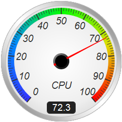
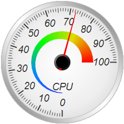
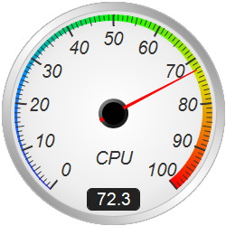
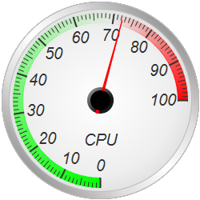
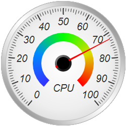
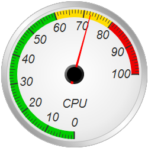

This example demonstrates round meters with a soft white background and a silver border.
The white background in this example is actually a radial gradient. It is fully white at the center, changing to light grey at the border. This creates a "softer" white effect. The radial gradient is created using
AngularMeter.relativeRadialGradient.
The silver border effect is achieved by using
AngularMeter.relativeLinearGradient to create a gradient consisting of varying levels of grey. The gradient is used as the fill color of the border ring created using
AngularMeter.addRing. The edge color of the ring is set to grey to make it easier to distinguish from the white background.
The following is the command line version of the code in "cppdemo/whiteroundmeter". The MFC version of the code is in "mfcdemo/mfcdemo". The Qt Widgets version of the code is in "qtdemo/qtdemo". The QML/Qt Quick version of the code is in "qmldemo/qmldemo".
#include "chartdir.h"
void createChart(int chartIndex, const char *filename)
{
// The value to display on the meter
double value = 72.3;
// Create an AngularMeter object of size 250 x 250 pixels with transparent background
AngularMeter* m = new AngularMeter(250, 250, Chart::Transparent);
// Set the default text and line colors to dark grey (0x333333)
m->setColor(Chart::TextColor, 0x333333);
m->setColor(Chart::LineColor, 0x333333);
// Demonstration two different meter scale angles
if (chartIndex % 2 == 0) {
// Center at (125, 125), scale radius = 111 pixels, scale angle -140 to +140 degrees
m->setMeter(125, 125, 109, -140, 140);
} else {
// Center at (125, 125), scale radius = 111 pixels, scale angle -180 to +90 degrees
m->setMeter(125, 125, 109, -180, 90);
}
// Add a black (0x000000) circle with radius 123 pixels as background
m->addRing(0, 123, 0x000000);
// Background gradient color from white (0xffffff) at the center to light grey (0xdddddd) at the
// border
double bgGradient[] = {0, 0xffffff, 0.75, 0xeeeeee, 1, 0xdddddd};
const int bgGradient_size = (int)(sizeof(bgGradient)/sizeof(*bgGradient));
// Add circle with radius 123 pixels as background using the background gradient
m->addRing(0, 123, m->relativeRadialGradient(DoubleArray(bgGradient, bgGradient_size), 123));
// Gradient color for the border to make it silver-like
double ringGradient[] = {1, 0x999999, 0.5, 0xdddddd, 0, 0xffffff, -0.5, 0xdddddd, -1, 0x999999};
const int ringGradient_size = (int)(sizeof(ringGradient)/sizeof(*ringGradient));
// Add a ring between radii 114 and 123 pixels using the silver gradient with a light grey
// (0xbbbbbb) edge as the meter border
m->addRing(114, 123, m->relativeLinearGradient(DoubleArray(ringGradient, ringGradient_size), 45,
123), 0xbbbbbb);
// Meter scale is 0 - 100, with major/minor/micro ticks every 10/5/1 units
m->setScale(0, 100, 10, 5, 1);
// Set the scale label style to 15pt Arial Italic. Set the major/minor/micro tick lengths to
// 12/9/6 pixels pointing inwards, and their widths to 2/1/1 pixels.
m->setLabelStyle("Arial Italic", 15);
m->setTickLength(-12, -9, -6);
m->setLineWidth(0, 2, 1, 1);
// Demostrate different types of color scales and putting them at different positions
double smoothColorScale[] = {0, 0x3333ff, 25, 0x0088ff, 50, 0x00ff00, 75, 0xdddd00, 100,
0xff0000};
const int smoothColorScale_size = (int)(sizeof(smoothColorScale)/sizeof(*smoothColorScale));
double stepColorScale[] = {0, 0x00cc00, 60, 0xffdd00, 80, 0xee0000, 100};
const int stepColorScale_size = (int)(sizeof(stepColorScale)/sizeof(*stepColorScale));
double highLowColorScale[] = {0, 0x00ff00, 70, Chart::Transparent, 100, 0xff0000};
const int highLowColorScale_size = (int)(sizeof(highLowColorScale)/sizeof(*highLowColorScale));
if (chartIndex == 0) {
// Add the smooth color scale at the default position
m->addColorScale(DoubleArray(smoothColorScale, smoothColorScale_size));
} else if (chartIndex == 1) {
// Add the smooth color scale starting at radius 62 with zero width and ending at radius 40
// with 22 pixels outer width
m->addColorScale(DoubleArray(smoothColorScale, smoothColorScale_size), 62, 0, 40, 22);
} else if (chartIndex == 2) {
// Add the smooth color scale starting at radius 109 with zero width and ending at radius
// 109 with 12 pixels inner width
m->addColorScale(DoubleArray(smoothColorScale, smoothColorScale_size), 109, 0, 109, -12);
} else if (chartIndex == 3) {
// Add the high/low color scale at the default position
m->addColorScale(DoubleArray(highLowColorScale, highLowColorScale_size));
} else if (chartIndex == 4) {
// Add the smooth color scale at radius 44 with 16 pixels outer width
m->addColorScale(DoubleArray(smoothColorScale, smoothColorScale_size), 44, 16);
} else {
// Add the step color scale at the default position
m->addColorScale(DoubleArray(stepColorScale, stepColorScale_size));
}
// Add a text label centered at (125, 175) with 15pt Arial Italic font
m->addText(125, 175, "CPU", "Arial Italic", 15, Chart::TextColor, Chart::Center);
// Add a readout to some of the charts as demonstration
if ((chartIndex == 0) || (chartIndex == 2)) {
// Put the value label center aligned at (125, 232), using white (0xffffff) 14pt Arial font
// on a dark grey (0x222222) background. Set box width to 50 pixels with 5 pixels rounded
// corners.
TextBox* t = m->addText(125, 232, m->formatValue(value,
"<*block,width=50,halign=center*>{value|1}"), "Arial", 14, 0xffffff, Chart::BottomCenter
);
t->setBackground(0x222222);
t->setRoundedCorners(5);
}
// Add a red (0xff0000) pointer at the specified value
m->addPointer2(value, 0xff0000);
// Output the chart
m->makeChart(filename);
//free up resources
delete m;
}
int main(int argc, char *argv[])
{
createChart(0, "whiteroundmeter0.png");
createChart(1, "whiteroundmeter1.png");
createChart(2, "whiteroundmeter2.png");
createChart(3, "whiteroundmeter3.png");
createChart(4, "whiteroundmeter4.png");
createChart(5, "whiteroundmeter5.png");
return 0;
}
© 2023 Advanced Software Engineering Limited. All rights reserved.